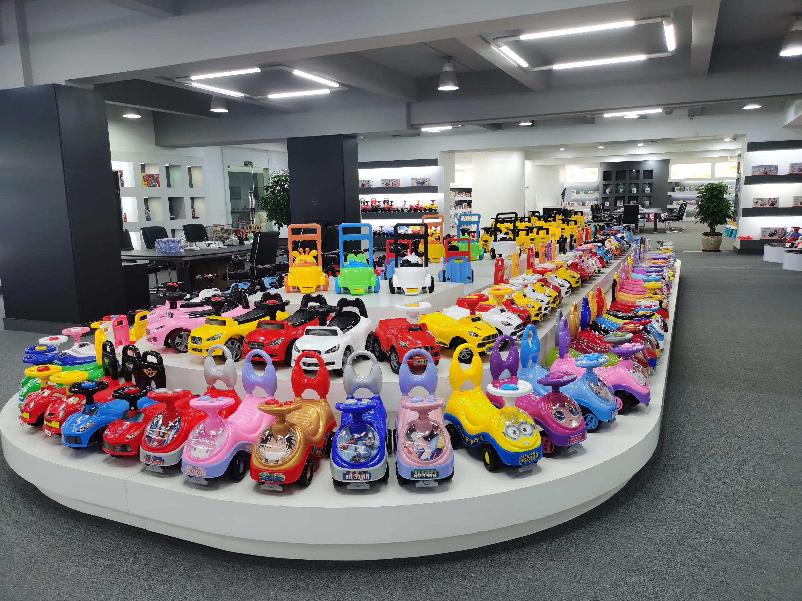
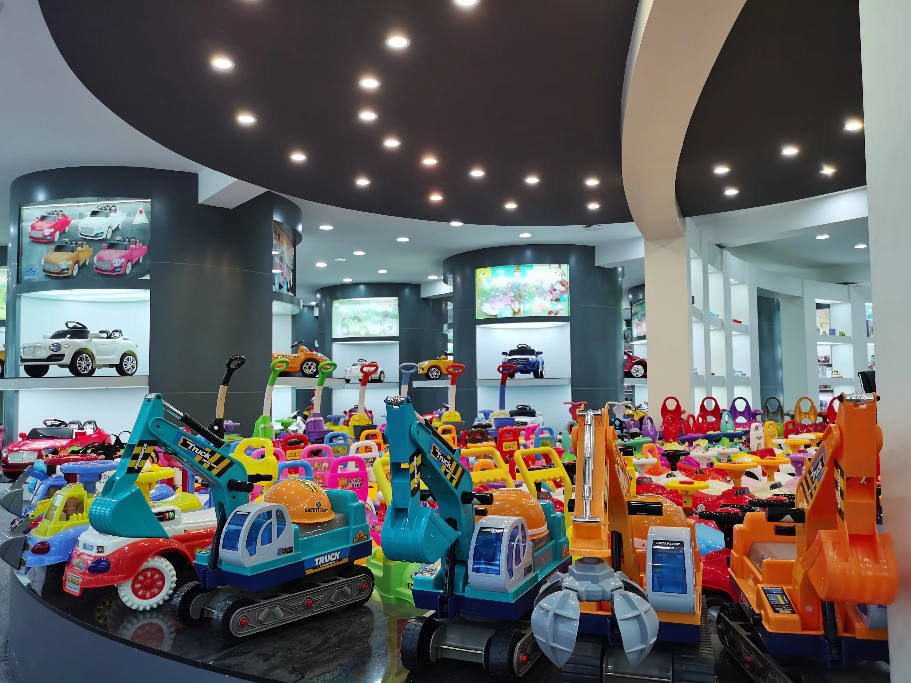
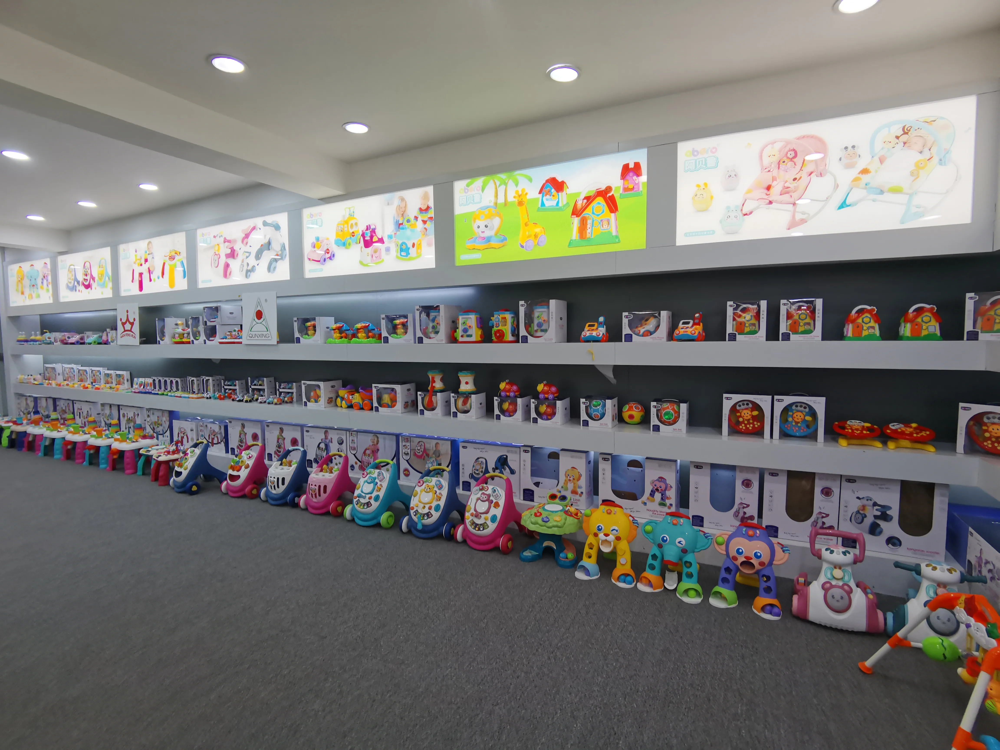

China Sourcing
More supplier options. One coordinated process.
We help international buyers search, compare, sample, follow, inspect, and prepare orders across a broad network of Chinese factories.
Why ABERO
Sourcing is more than finding a quotation.
A workable supplier must match the product, price, minimum order, quality level, lead time, communication needs, and destination-market requirements.
ABERO helps turn that comparison into a managed process. We organize the supplier shortlist, samples, commercial details, production follow-up, inspection, and export preparation around one buyer brief.
Shantou team · China factory network

Sourcing Workflow
From search request to shipment release.
Each stage creates a clearer commercial and quality picture before the order moves forward.
Define
Product, price, quantity, market, packaging, quality, and schedule.
Search
Identify suitable factories and compare key commercial conditions.
Sample
Coordinate samples, revisions, and buyer approval before ordering.
Follow
Track production, packaging, deadlines, and issues with suppliers.
Inspect
Arrange final checks and prepare goods for consolidation or shipment.
Regional Coverage
Match the category to the right production base.
Regional strengths help narrow the search and improve the fit between a product requirement and a supplier’s actual capability.
Shantou / Chenghai
Toys, ride-ons, vehicles, plastic products, and broad category showrooms.
Shenzhen / Dongguan
Electronic products, connected components, tooling, and mixed processes.
Yiwu / Zhejiang
Small commodities, accessories, promotional products, and seasonal ranges.
Ningbo / East China
Plastic products, outdoor items, packaging, and export-oriented suppliers.
Category Coverage
Build a focused range or a mixed-category program.
Category tags below are a practical first-pass placeholder for the final sourcing catalog.
Plastic ToysRide-on CarsVehiclesDollsElectronic ToysEducationalOutdoorPlushSeasonalAccessoriesPromotionalPrivate Label




Order Control
Keep separate suppliers aligned to one delivery plan.
For multi-supplier orders, we can coordinate status updates, packaging information, inspection timing, consolidation readiness, and shipment handoffs against a shared plan.
- Supplier communication
- Sample and approval tracking
- Production status follow-up
- Inspection and consolidation support
Need a supplier shortlist?